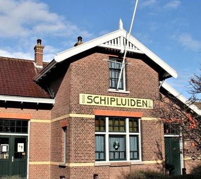
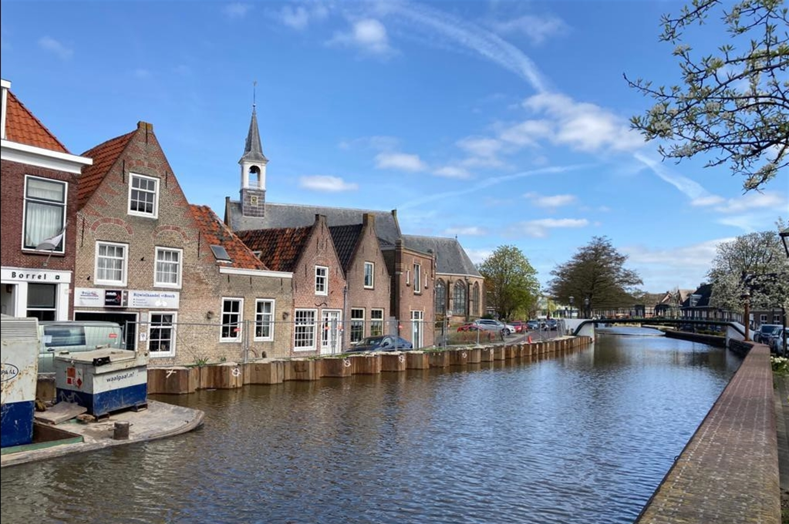

 Het station in Schipluiden is gebouwd in een eclectische stijl met elementen uit de chaletstijl en Art Nouveau. De overkapping van de wachtkamer naar het perron is verdwenen, maar er bestaat een plan om deze ruimte terug te brengen. Het interieur van het tramstation is nog geheel intact met als pronkstuk de Jugendstilwachtkamer. Het pand is een jong rijksmonument. Tot juni 1925 vervoerde de stoomtram zowel personen als goederen. Voor een ritje naar Delft betaalde men in 1912 15 cent. In het tramstation woonde de stationschef met zijn gezin. In het begin van de jaren zestig van de vorige eeuw stopte het geregelde tramvervoer in het Westland en verdwenen de meeste tramstations. In Schipluiden is het gebouw gelukkig bewaard gebleven. Van 1963 tot 1987 werd het tramstation achtereenvolgens gebruikt als kantoor van het transportbedrijf Eikelenboom en werkplaats van het gespecialiseerde bedrijf van Spaans. In het voorjaar van 1987 kreeg de Historische Vereniging Oud-Schipluiden het pand van de gemeente toegewezen. Na een ingrijpende restauratie werd het gebouw op 28 april 1989 als Museum Het Tramstation in gebruik genomen.
In Schipluiden kun je heerlijk varen of genieten van andere water activiteiten zoals kano-varen, waterfietsen en suppen. Er zijn heel veel mooie vaarroutes door onder andere Midden-Delfland, het Westland, Maasland en Vlaardingen. Aan het water kom je verschillende restaurants en terrassen tegen en er is onderweg voldoende te zien en te beleven in de prachtige natuur.